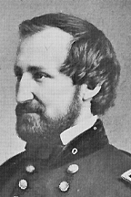

|

|

|
|
|
A Union general in the western theater of operations,
William Starke Rosecrans was born on September 6, 1819, at
his father's farm in Delaware County, Ohio.
Ranking fifth out of fifty-one cadets in the West Point
Class of 1842, he remained at the Academy teaching
engineering and performing various military duties after
graduation. During the Mexican-American War of 1846-1848,
he saw no combat service but instead remained in the
Northeast, supervising the construction of fortifications at
Newport, Rhode Island. Rosecrans resigned from the service
in 1854 to embark on a career as an engineer and
businessman.
Following the Confederate shelling of Fort Sumter,
Rosecrans volunteered his services and was appointed Colonel
of the 23rd Ohio in June of 1861. Rosecrans quickly
advanced and succeeded General George B. McClellan in
command of the Department of Ohio. In November 1861,
Brigadier General Rosecrans defeated Robert E. Lee's
Confederate Army in the Allegheny Mountains facilitating the
creation of the state of West Virginia. Assigned to the
western theater in May 1862, now Major General Rosecrans led
the Army of the Mississippi in the successful battles at
Iuka (September 1862) and Corinth (October 1862).
Rosecrans assumed command of the Army of the Cumberland
in Nashville on October 27, 1862. Marching southeast on
December 26th, he confronted Confederate General Braxton
Bragg's Army of the Tennessee near Murfreesboro (Stone's
River) on the 31st. After a bloody two-day battle, the
Confederates retreated. His June 1863 Tullahoma Campaign
successfully drove Bragg out of Tennessee, but failed to
destroy the Confederate Army. Crossing the Tennessee River
in the beginning of September, he captured Chattanooga.
However, the Confederate commander, now reinforced by troops
from Virginia and Mississippi, counterattacked on September
18th at Chickamauga Creek, southeast of the city. Although
Rosecrans commanded ably on the 19th, he made a tactical
mistake the next day, leaving a gap in his line. Bragg
exploited Rosecrans' error and drove the Union Army from the
battlefield. Fleeing to Chattanooga ahead of his troops,
Rosecrans lost the moral authority to lead his army and was
relieved of his duty in October. His final active command
was in the Department of Missouri in 1864.
Resigning from the service in 1867, he became minister to
Mexico in 1868. Replaced by President Grant, with whom he
had a long-standing feud, Rosecrans became a resident of
California. He served two terms in Congress (1880-1885) and
remained active in veteran's affairs. He died at his
Redondo ranch, near Los Angeles, on March 11, 1898. His
remains were transferred with full military honors, to
Arlington National Cemetery in May 1902.
Source: Joan Waugh, ed., Facts on File Encyclopedia of American
History: Civil War and Reconstruction, 1856 to 1869 (New York: Facts on
File, 2003), 305.
|